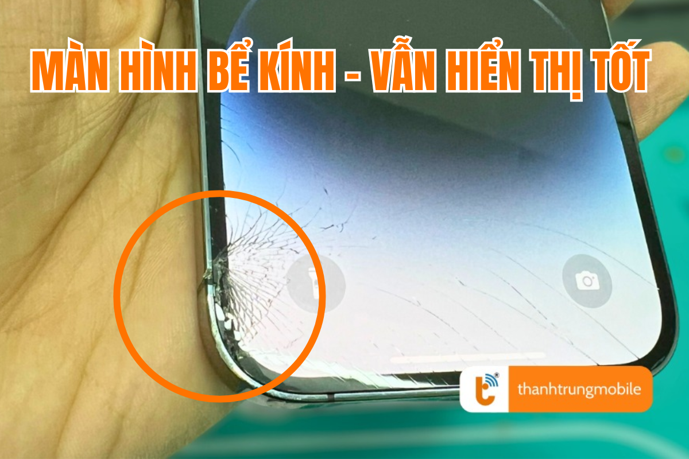
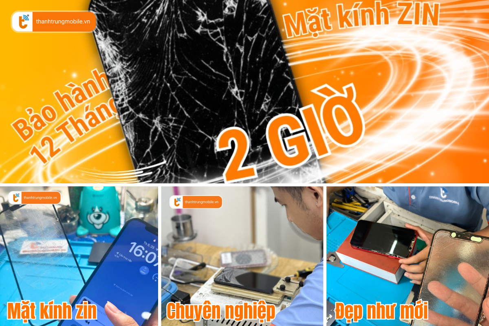

Ép Kính iPhone 8, 8 Plus Giá Rẻ, Lấy Liền Tại TP.HCM
Những chiếc iPhone 8, 8 Plus nổi bật với thiết kế sang trọng và chắc chắn. Tuy nhiên, mặt kính của chúng có thể bị hỏng hóc do va đập hay rơi vỡ. Khi mặt kính bị nứt hoặc vỡ, không chỉ ảnh hưởng đến thẩm mỹ mà còn làm giảm trải nghiệm của người dùng. Vì vậy, việc ép kính cho iPhone 8 Series là lựa chọn tiết kiệm, giúp bạn bảo vệ chiếc smartphone của mình mà không cần thay toàn bộ màn hình.
Thành Trung Mobile cung cấp dịch vụ ép kính iPhone 8 và 8 Plus chất lượng cao, lấy liền, giá rẻ tại TP.HCM, giúp bạn tiết kiệm chi phí và nhanh chóng lấy lại chiếc iPhone như mới.
Ép Kính iPhone 8 Series: Lợi Ích và Thời Gian Thực Hiện
Việc ép kính cho iPhone 8 Series giúp bạn tiết kiệm một khoản chi phí lớn so với việc thay thế toàn bộ màn hình. Điều này đặc biệt hữu ích khi mặt kính của bạn chỉ bị nứt hoặc vỡ mà màn hình vẫn hoạt động bình thường. Thời gian ép kính tại Thành Trung Mobile chỉ từ 1-2 giờ, giúp bạn nhanh chóng có lại chiếc điện thoại như mới mà không phải chờ đợi lâu.
Dấu Hiệu Cần Ép Kính iPhone 8 Series
Việc nhận diện khi nào cần ép kính iPhone 8 Series rất quan trọng. Dưới đây là những dấu hiệu rõ ràng cho thấy bạn cần thay mặt kính:
- Kính bị nứt hoặc vỡ rõ rệt, nhưng màn hình cảm ứng và hiển thị vẫn hoạt động tốt.
- Mặt kính bị trầy xước hoặc bị ám màu, làm giảm chất lượng hiển thị và cảm ứng.
- Cảm ứng bị “rít tay” hoặc không mượt mà khi sử dụng.
- Kính bị lỏng, hở keo hoặc có dấu hiệu bong tróc khỏi màn hình.
Để tránh tình trạng trên, việc ép kính sẽ giúp bạn khôi phục vẻ đẹp ban đầu của chiếc iPhone 8 mà không tốn quá nhiều chi phí. Đây là giải pháp tuyệt vời nếu mặt kính bị hỏng nhưng màn hình vẫn còn hoạt động hoàn hảo.
Giá Ép Kính iPhone 8 và 8 Plus
Dưới đây là bảng giá dịch vụ ép kính iPhone 8 Series tại Thành Trung Mobile. Chúng tôi cam kết cung cấp dịch vụ chất lượng cao với mức giá hợp lý:
| Dòng Máy | Giá Ép Kính |
|---|---|
| iPhone 8 | 250,000 VNĐ |
| iPhone 8 Plus | 300,000 VNĐ |
Để được tư vấn và nhận giá chính xác, bạn có thể liên hệ trực tiếp qua hotline của chúng tôi hoặc ghé thăm cửa hàng tại TP.HCM. Xem thêm dịch vụ ép kính iPhone 8 Plus tại đây.
Quy Trình Ép Kính iPhone 8 Series Tại Thành Trung Mobile
Quy trình ép kính tại Thành Trung Mobile được thực hiện theo các bước nghiêm ngặt để đảm bảo chất lượng dịch vụ:
- Nhận máy và kiểm tra tình trạng mặt kính và màn hình.
- Thông báo giá dịch vụ và thời gian thực hiện cho khách hàng.
- Tiến hành ép kính bằng máy móc hiện đại, đảm bảo độ chính xác cao và không làm ảnh hưởng đến màn hình.
- Kiểm tra lại chất lượng cảm ứng và hiển thị sau khi ép kính.
- Bàn giao máy cho khách hàng, in phiếu bảo hành và hướng dẫn sử dụng.
Ép Kính iPhone 8 Series Có Ảnh Hưởng Đến Màn Hình Không?
Khi ép kính tại Thành Trung Mobile, bạn hoàn toàn yên tâm rằng màn hình của bạn sẽ không bị ảnh hưởng. Quy trình ép kính hiện đại giúp mặt kính được thay thế mà không làm hỏng hoặc ảnh hưởng đến chất lượng màn hình. Chúng tôi sử dụng loại kính zin, chất lượng cao, đảm bảo không làm giảm độ sáng, độ nét hay chất lượng cảm ứng của iPhone.
Ép Kính iPhone 8 Series Nhanh Chóng và Tiết Kiệm Thời Gian
Thành Trung Mobile cung cấp dịch vụ ép kính lấy liền chỉ trong vòng 1-2 giờ, giúp bạn tiết kiệm thời gian mà vẫn đảm bảo chất lượng. Đội ngũ kỹ thuật viên giàu kinh nghiệm sẽ thực hiện quy trình một cách chuyên nghiệp, nhanh chóng và hiệu quả.
Tại Sao Nên Chọn Thành Trung Mobile?
Với nhiều năm kinh nghiệm trong ngành sửa chữa điện thoại, Thành Trung Mobile là địa chỉ tin cậy cho dịch vụ ép kính iPhone 8 Series tại TP.HCM. Chúng tôi cam kết mang đến cho khách hàng:
- Mặt kính chất lượng cao, ép kính chuẩn như mới, không hở keo, không ảnh hưởng đến màn hình.
- Thời gian ép kính nhanh chóng, lấy liền trong vòng 1-2 giờ.
- Giá cả hợp lý, không phát sinh thêm chi phí.
- Bảo hành lâu dài, bảo vệ quyền lợi của khách hàng.
- Đội ngũ kỹ thuật viên giàu kinh nghiệm, nhiệt tình và chuyên nghiệp.
Liên Hệ Thành Trung Mobile Để Ép Kính iPhone 8 Series
Với dịch vụ ép kính chất lượng cao, lấy liền, và giá cả hợp lý, Thành Trung Mobile luôn là lựa chọn hàng đầu cho người dùng iPhone 8 Series tại TP.HCM. Hãy liên hệ ngay với chúng tôi để được tư vấn và trải nghiệm dịch vụ ép kính chuyên nghiệp, nhanh chóng!
Tham khảo thêm dịch vụ ép kính cho các dòng iPhone khác tại đây.